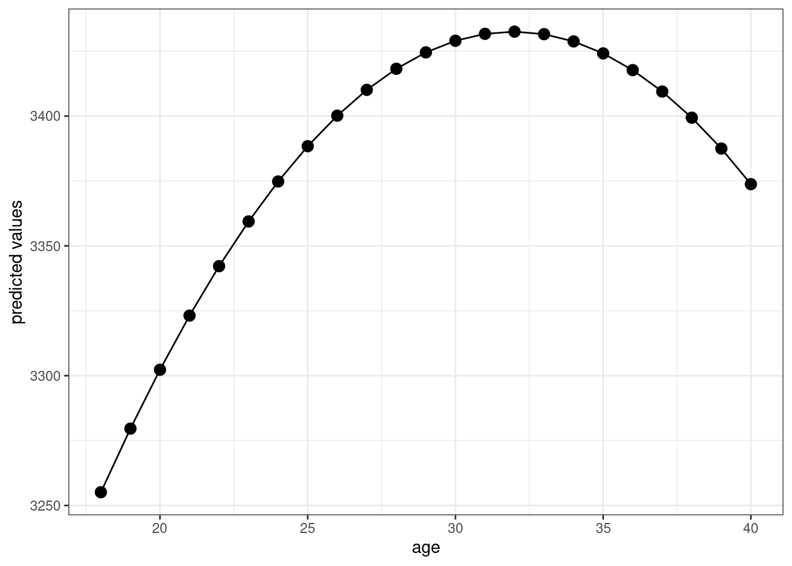

4.13 Lab 3: Solutions
# load packages
library(haven)
library(modelsummary)
library(dplyr)
library(ggplot2)
# load data
Birthweight_Smoking <- read_dta("data/birthweight_smoking.dta")reg1 <- lm(birthweight ~ smoker, data=Birthweight_Smoking)
summary(reg1)##
## Call:
## lm(formula = birthweight ~ smoker, data = Birthweight_Smoking)
##
## Residuals:
## Min 1Q Median 3Q Max
## -3007.06 -313.06 26.94 366.94 2322.94
##
## Coefficients:
## Estimate Std. Error t value Pr(>|t|)
## (Intercept) 3432.06 11.87 289.115 <2e-16 ***
## smoker -253.23 26.95 -9.396 <2e-16 ***
## ---
## Signif. codes: 0 '***' 0.001 '**' 0.01 '*' 0.05 '.' 0.1 ' ' 1
##
## Residual standard error: 583.7 on 2998 degrees of freedom
## Multiple R-squared: 0.0286, Adjusted R-squared: 0.02828
## F-statistic: 88.28 on 1 and 2998 DF, p-value: < 2.2e-16We estimate that, on average, smoking reduces an infant’s birthweight by about 250 grams. The estimated effect is strongly statistically significant, and (I am not an expert but) that seems like a large effect of smoking to me.
# create smoker factor --- just to make table look nicer
Birthweight_Smoking$smoker_factor <- as.factor(ifelse(Birthweight_Smoking$smoker==1, "smoker", "non-smoker"))
datasummary_balance(~smoker_factor,
data=dplyr::select(Birthweight_Smoking, -smoker),
fmt=2)| Mean | Std. Dev. | Mean | Std. Dev. | Diff. in Means | Std. Error | |
|---|---|---|---|---|---|---|
| nprevist | 11.19 | 3.50 | 10.18 | 4.23 | -1.01 | 0.19 |
| alcohol | 0.01 | 0.11 | 0.05 | 0.22 | 0.04 | 0.01 |
| tripre1 | 0.83 | 0.38 | 0.70 | 0.46 | -0.13 | 0.02 |
| tripre2 | 0.14 | 0.34 | 0.22 | 0.41 | 0.08 | 0.02 |
| tripre3 | 0.03 | 0.16 | 0.06 | 0.24 | 0.04 | 0.01 |
| tripre0 | 0.01 | 0.08 | 0.02 | 0.15 | 0.02 | 0.01 |
| birthweight | 3432.06 | 584.62 | 3178.83 | 580.01 | -253.23 | 26.82 |
| unmarried | 0.18 | 0.38 | 0.43 | 0.50 | 0.25 | 0.02 |
| educ | 13.15 | 2.21 | 11.88 | 1.62 | -1.27 | 0.08 |
| age | 27.27 | 5.37 | 25.32 | 5.06 | -1.95 | 0.24 |
| drinks | 0.03 | 0.47 | 0.19 | 1.23 | 0.16 | 0.05 |
The things that stand out to me are:
Birthweight tends to be notably lower for smokers relative to non-smokers. The difference is about 7.4% lower birthweight for babies whose mothers smoked.
That said, smoking is also correlated with a number of other things that could be related to lower birthweights. Mothers who smoke went to fewer pre-natal visits on average, were more likely to be unmarried, were more likely to have drink alcohol during their pregnancy, were more likely to be less educated. They also were, on average, somewhat younger than mothers who did not smoke.
reg3 <- lm(birthweight ~ smoker + educ + nprevist + age + alcohol,
data=Birthweight_Smoking)
summary(reg3)##
## Call:
## lm(formula = birthweight ~ smoker + educ + nprevist + age + alcohol,
## data = Birthweight_Smoking)
##
## Residuals:
## Min 1Q Median 3Q Max
## -2728.91 -305.26 24.69 359.63 2220.42
##
## Coefficients:
## Estimate Std. Error t value Pr(>|t|)
## (Intercept) 2924.963 74.185 39.428 < 2e-16 ***
## smoker -206.507 27.367 -7.546 5.93e-14 ***
## educ 5.644 5.532 1.020 0.308
## nprevist 32.979 2.914 11.318 < 2e-16 ***
## age 2.360 2.178 1.083 0.279
## alcohol -39.512 76.365 -0.517 0.605
## ---
## Signif. codes: 0 '***' 0.001 '**' 0.01 '*' 0.05 '.' 0.1 ' ' 1
##
## Residual standard error: 570.3 on 2994 degrees of freedom
## Multiple R-squared: 0.07402, Adjusted R-squared: 0.07247
## F-statistic: 47.86 on 5 and 2994 DF, p-value: < 2.2e-16Here we estimate that smoking reduces an infant’s birthweight by about 200 grams on average holding education, number of pre-natal visits, age, and whether or not the mother consumed alcohol constant. The magnitude of the estimated effect is somewhat smaller than the previous estimate. Due to the discussion in #2 (particularly, that smoking was correlated with a number of other characteristics that are likely associated with lower birthweights), this decrease in the magnitude is not surprising.
reg4 <- lm(birthweight ~ smoker + I(smoker*age) + educ + nprevist + age + alcohol,
data=Birthweight_Smoking)
summary(reg4)##
## Call:
## lm(formula = birthweight ~ smoker + I(smoker * age) + educ +
## nprevist + age + alcohol, data = Birthweight_Smoking)
##
## Residuals:
## Min 1Q Median 3Q Max
## -2722.56 -305.12 23.93 363.43 2244.67
##
## Coefficients:
## Estimate Std. Error t value Pr(>|t|)
## (Intercept) 2853.819 77.104 37.013 < 2e-16 ***
## smoker 231.578 134.854 1.717 0.086036 .
## I(smoker * age) -17.145 5.168 -3.317 0.000919 ***
## educ 4.895 5.528 0.885 0.375968
## nprevist 32.482 2.913 11.151 < 2e-16 ***
## age 5.528 2.375 2.328 0.019999 *
## alcohol -22.556 76.409 -0.295 0.767864
## ---
## Signif. codes: 0 '***' 0.001 '**' 0.01 '*' 0.05 '.' 0.1 ' ' 1
##
## Residual standard error: 569.4 on 2993 degrees of freedom
## Multiple R-squared: 0.07741, Adjusted R-squared: 0.07556
## F-statistic: 41.85 on 6 and 2993 DF, p-value: < 2.2e-16We should be careful about the interpretatio here. We have estimated a model like
\[ \E[Birthweight|Smoker, Age, X] = \beta_0 + \beta_1 Smoker + \beta_2 Smoker \cdot Age + \cdots \] Therefore, the partial effect of smoking is given by
\[ \E[Birthweight | Smoker=1, Age, X] - \E[Birthweight | Smoker=0, Age, X] = \beta_1 + \beta_2 Age \] Therefore, the partial effect of smoking depends on \(Age\). For example, for \(Age=18\), the partial effect is \(\beta_1 + \beta_2 (18)\). For \(Age=25\), the partial effect is \(\beta_1 + \beta_2 (25)\), and for \(Age=35\), the partial effect is \(\beta_1 + \beta_2 (35)\). Let’s calculate the partial effect at each of those ages.
bet1 <- coef(reg4)[2]
bet2 <- coef(reg4)[3]
pe_18 <- bet1 + bet2*18
pe_25 <- bet1 + bet2*25
pe_35 <- bet1 + bet2*35
round(cbind.data.frame(pe_18, pe_25, pe_35),2)## pe_18 pe_25 pe_35
## smoker -77.04 -197.05 -368.51This suggests substantially larger effects of smoking on birthweight for older mothers.
reg5 <- lm(birthweight ~ smoker + I(smoker*alcohol) + educ + nprevist + age + alcohol,
data=Birthweight_Smoking)
summary(reg5)##
## Call:
## lm(formula = birthweight ~ smoker + I(smoker * alcohol) + educ +
## nprevist + age + alcohol, data = Birthweight_Smoking)
##
## Residuals:
## Min 1Q Median 3Q Max
## -2728.99 -304.16 24.54 359.92 2222.10
##
## Coefficients:
## Estimate Std. Error t value Pr(>|t|)
## (Intercept) 2924.844 74.185 39.426 < 2e-16 ***
## smoker -201.852 27.765 -7.270 4.57e-13 ***
## I(smoker * alcohol) -151.860 152.717 -0.994 0.320
## educ 5.612 5.532 1.014 0.310
## nprevist 32.844 2.917 11.260 < 2e-16 ***
## age 2.403 2.178 1.103 0.270
## alcohol 39.824 110.440 0.361 0.718
## ---
## Signif. codes: 0 '***' 0.001 '**' 0.01 '*' 0.05 '.' 0.1 ' ' 1
##
## Residual standard error: 570.3 on 2993 degrees of freedom
## Multiple R-squared: 0.07432, Adjusted R-squared: 0.07247
## F-statistic: 40.05 on 6 and 2993 DF, p-value: < 2.2e-16The point estimate suggests that the effect of smoking is larger for women who consume alcohol and smoke than for women who do not drink alcohol. This seems plausible, but our evidence is not very strong here — the estimates are not statistically significant at any conventional significance level (the p-value is equal to 0.32).
reg6 <- lm(birthweight ~ age + I(age^2), data=Birthweight_Smoking)
summary(reg6)##
## Call:
## lm(formula = birthweight ~ age + I(age^2), data = Birthweight_Smoking)
##
## Residuals:
## Min 1Q Median 3Q Max
## -2949.81 -312.81 30.43 371.03 2452.72
##
## Coefficients:
## Estimate Std. Error t value Pr(>|t|)
## (Intercept) 2502.8949 225.6016 11.094 < 2e-16 ***
## age 58.1670 16.9212 3.438 0.000595 ***
## I(age^2) -0.9099 0.3099 -2.936 0.003353 **
## ---
## Signif. codes: 0 '***' 0.001 '**' 0.01 '*' 0.05 '.' 0.1 ' ' 1
##
## Residual standard error: 589.6 on 2997 degrees of freedom
## Multiple R-squared: 0.009261, Adjusted R-squared: 0.0086
## F-statistic: 14.01 on 2 and 2997 DF, p-value: 8.813e-07preds <- predict(reg6, newdata=data.frame(age=seq(18,40)))
ggplot(data.frame(preds=preds, age=seq(18,40)), aes(x=age, y=preds)) +
geom_line() +
geom_point(size=3) +
theme_bw() +
ylab("predicted values") The figure suggests that predicted birthweight is increasing in mother’s age up until about age 34 and then decreasing after that.
reg7 <- lm(I(log(birthweight)) ~ smoker + educ + nprevist + age + alcohol,
data=Birthweight_Smoking)
summary(reg7)##
## Call:
## lm(formula = I(log(birthweight)) ~ smoker + educ + nprevist +
## age + alcohol, data = Birthweight_Smoking)
##
## Residuals:
## Min 1Q Median 3Q Max
## -1.96324 -0.07696 0.02435 0.12092 0.50070
##
## Coefficients:
## Estimate Std. Error t value Pr(>|t|)
## (Intercept) 7.9402678 0.0270480 293.562 < 2e-16 ***
## smoker -0.0635764 0.0099782 -6.372 2.16e-10 ***
## educ 0.0022169 0.0020171 1.099 0.272
## nprevist 0.0129662 0.0010624 12.205 < 2e-16 ***
## age 0.0003059 0.0007941 0.385 0.700
## alcohol -0.0181053 0.0278428 -0.650 0.516
## ---
## Signif. codes: 0 '***' 0.001 '**' 0.01 '*' 0.05 '.' 0.1 ' ' 1
##
## Residual standard error: 0.2079 on 2994 degrees of freedom
## Multiple R-squared: 0.07322, Adjusted R-squared: 0.07167
## F-statistic: 47.31 on 5 and 2994 DF, p-value: < 2.2e-16The estimated coefficient on \(smoker\) says that smoking during pregnancy decreases a baby’s birthweight by 6.3%, on average, holding education, number of pre-natal visits, age of the mother, and whether or not the mother consumed alcohol during the pregnancy constant.